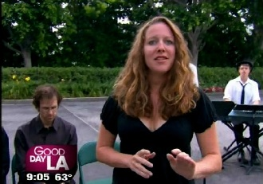

MARTHA MARION
Actor
Martha Marion is an actor and comedian based in Los Angeles. Since graduating from Northwestern University, Martha has toured nationally as a stand-up comic, played a mushroom-child in Tell the Bees, a semi-retarded child in The Celebrated Jumping Frog of Calaveras County, a sexually precocious child in Tales From the 8th Grade, and a child of Brentwood, CA, in the original rock musical Hey, Morgan! . Currently Martha works as a producer, actor, and teaching artist for The Striking Viking Story Pirates, an arts education and performance organization that blows kids' minds in over 100 schools in NYC and 30 in L.A.!
Interestingly enough, Martha is not a child. In fact, she's the author of the adulthood tutorial blog Welcome to Grown-Up Town, which you should go read right now. Also, she cannot tell you how happy she is to be performing alongside such phenomenal people in the Lost Moon Radio series!
Martha in Action...
On the set of "Chicken vs. Egg," with special guest Lena Coleman.

Performing "Free to Be Repressed" on Good Day LA.